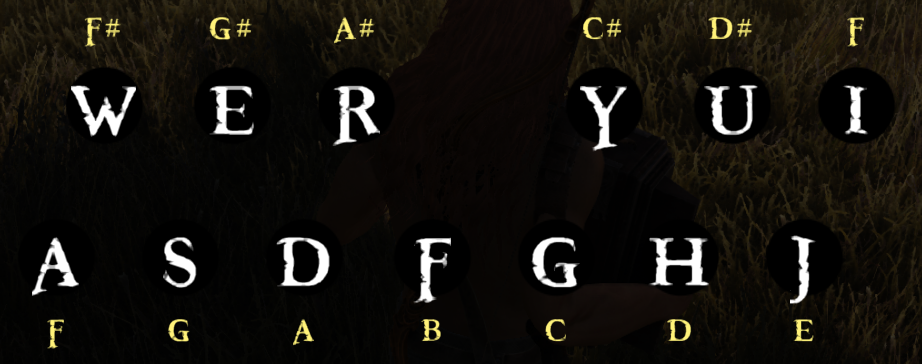

Enter a song below to generate an autohotkey script. The keys are awsedrfgyhuji, to skip a beat use a space, and to sustain a note use a dash - for as many extra beats you want to sustain.
You can change the delay time and the toggle key that starts/stops the macro.